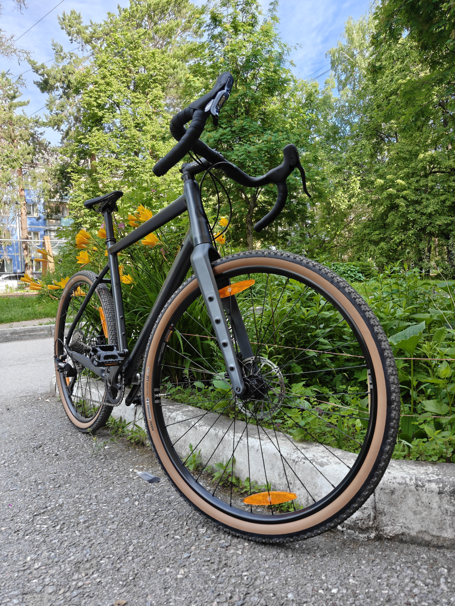

Расставьте по приоритетности для автора:
Надумал я нынче, что мне стал маловат мой старый велосипед. Тот самый, который я брал себе на 14, долгих 8 лет назад -- тогда ещё Cannondale можно было купить в Триале (теперь там в основном Outleap). Сколько всего с тех пор поменялось; я бы даже сказал, что вообще всё. Ох и грустно продавать. Причём это даже не просто сантименты: приносил в сервис поднастроить (в итоге передумал и сам сделал), упомянул, что собираюсь продавать, так даже мастер хотел купить, но сказал, что денег нет сейчас.
С продажей легендарная история получилась: продал другу, который не умеет кататься на велосипеде. По ощущениям теперь что угодно и кому угодно продам). На самом деле, рад что именно так вышло, хотя и пришлось скидку сделать. Столько всякого шлака продают, что если не умеешь кататься хотя бы, то можно купить и навсегда разочаровать, думая, что все велосипеды такие. А тут песня: MTB весом 12 кг (я вообще не знаю, как Cannondale это сделали за очень среднюю цену), хорошая гидравлика Tektro, педали и то свои оставил (с умыслом контакты опробовать).
Ну и нацелился купить грэвел. Да, я с толпой, и что? Да, если все купят двухподвесы, то и я куплю. Нет, эндуро я не куплю никогда. Подумал, что если уж сейчас не попробую подшосеенную посадку, руль-баран и всю эту историю, то уж точно до конца жизни буду гонять на привычных MTB.
Выбор, конечно, был БЫ достаточно сложный, будь в Триале что-то нормальное по цене/качеству кроме Outleap'ов, а так они все +- одинаковые. Здесь есть два наблюдения: во-первых, мне кажется, что гравийники стоят в среднем дешевле, чем MTB с аналогичным обвесом; во-вторых, у грэвелов с более-менее обвесом вилки карбоновые. И тут действительно разница заметна: я удивился, насколько они лёгкие. Предполагаю, что дальше копания типа "поставить карбоновый руль и подседел" -- это уже для понта.
Так вот, немного о вилке: из-за того, что она карбоновая, вес сильно назад смещён у самого велосипеда. А для шоссейной посадки центр масс должен быть ну где-то уж точно перед педалями, как же так? Я думаю, не так это и важно, потому что при посадке на велосипед (лёгкое) человека (тяжелое) не так и сильно сместится центр масс относительно той же рамы с вилкой из того же материала.
Что и говорить, ощущения от езды потрясающие! По лесу, ожидаемо, уже не так бодро, особенно с горки, но в в остальном вполне проходимо. А это ещё нормальный запас по профилю покрышки остался. Пистолетики на руле очень удобные, с обмоткой руля пока не смог договориться. Отсутствие переднего переключателя прилично облегчает жизнь.
По совету одного знакомого прораба теперь смазываю цепь парафином. Прямо в расплавленный опускаю, отвариваю, достаю, "сушу", разминаю, ставлю. Был ещё авторский вариант: греешь парафин до 270℃, он люто кипит, активно дымит, смесь с воздухом старается взорваться, но в институте мне этого не простили. На улице очень жарко сейчас, поэтому где-то раз в 100 км обновлять приходится. Вот 300 проехал за 2 недели пока что -- на работу начал ездить (35 км туда и обратно), но не каждый день получается.
